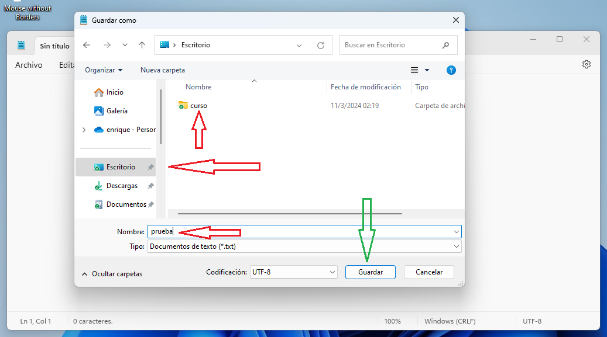

Ahora el siguiente paso es crear un archivo y conocer lo que es una extensión. Para esta etapa vamos a usar el bloc de notas, que es la aplicación que tienen por defecto los sistemas operativos para escribir texto. Por los momentos sólo vamos a crear un archivo y guardarlo dentro de la carpeta que acabamos de crear. Una vez abierta la aplicación bloc de notas, tocamos la pestaña "archivo" y seleccionamos "guardar como" del menú desplegable, así:
Al tocar esa opción, nos aparece un cuadro que nos permite nombrar y ubicar ese archivo, en mi caso le llamaré "prueba" y nos vamos a asegurar que quede dentro de la carpeta que acabamos de crear. Tocamos el botón guardar y listo.

hacemos doble clic en la carpeta para comprobar y listo, ahí está
Hay algo que es necesario comprender: qué son las extensiones. Las extensiones son una parte del nombre de un archivo que sirve para identificarlo dentro de algún grupo o categoría. Existen categorías como audio, video, texto, imagen y muchas más. Para construir un archivo se hace lo siguiente: se escribe el nombre que queramos, luego un punto y finalmente la extensión, quedando algo así: nombre.extensión
El documento que acabamos de crear dentro de nuestra carpeta se ubica en la categoría "texto" y su extensión es txt, por lo tanto debe verse así: prueba.txt
vamos a comprobarlo: se ubican en el archivo y con el botón derecho del ratón buscan en el menú que se despliega la opción "propiedades" y esto les mostrará un cuadro informativo en el que podemos ver la extensión del archivo
al colocar una extensión determinada a un archivo, le estamos diciendo qué programa o aplicación habrá de abrirlo, si, por ejemplo, llamamos a nuestro archivo prueba.pdf, será el lector pdf el que lo abra; si por otro lado le llamamos prueba.mp3, nuestro archivo será abierto por el reproductor de música. Pueden hacer la prueba ustedes mismos. Creen un archivo, le ponen un nombre, un punto y una extensión que deseen, y verán que el icono cambia, luego lo guardan y lo ejecutan con un doble clic; deberán observar que será abierto el programa predeterminado.
yo haré la prueba con un archivo que llamaré borrar con extensión mp3 para que lo abra el reproductor de audio.
Acá les dejo una lista con las extensiones más comunes.
Audio (mp3, wav, vlc)
Video (mp4, mkv, mov)
Texto (txt, docx, pdf, epub)
hoja de cálculo (xls)
Presentación de powerpoint (ppt)
Imagen (png, jpg, jpeg, bmp, svg)
Programación (java, php, js, py)
web (html, css)
Practiquemos un poco:
queremos crear un archivo llamado "documento" con extensión Portable Document File para que sea usado por lectores PDF como Adobe Reader. Qué extensión lleva ese archivo?